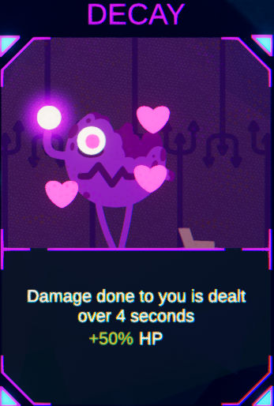

Decay

Decay is an uncommon card that allows any damage taken by the player to be spread out over 4 seconds.
On top of this, it also grants +50% health.
This card can be good allowing the player to last longer and sometimes get a quick kill before their demise, however, if the opponent has any card such as scavenger, brawler or taste of blood, decay will work against you and allow your opponents abilities to activate over and over again.
This card synergises well with cards such as huge or tank which grant extra health.